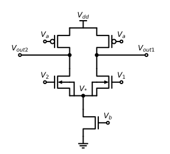

Differential Amplifiers
Differential Amplifiers#


Fig. 1 Differential applifier configuration#

Fig. 2 Differential applifier configuration#

Fig. 3 Differential applifier configuration#
Fig. 4 Differential applifier configuration#
Fig. 5 Differential applifier configuration#
Fig. 6 Differential applifier configuration#

Fig. 7 Differential applifier configuration#
Fig. 8 Differential applifier configuration#